Trivia Dispenser — Cornerstone of Engineering 2 Final Project
An interactive STEM trivia game designed for fifth-grade classrooms, built with a team of five over five milestones. The system pairs a Raspberry Pi Zero-driven touchscreen trivia interface with a physical block-dispensing mechanism that rewards correct answers, all housed in a custom-painted laser-cut wood enclosure. The project addressed a real classroom need identified through stakeholder research: an inclusive, standards-aligned STEM game that stays engaging without relying on addictive reward loops.
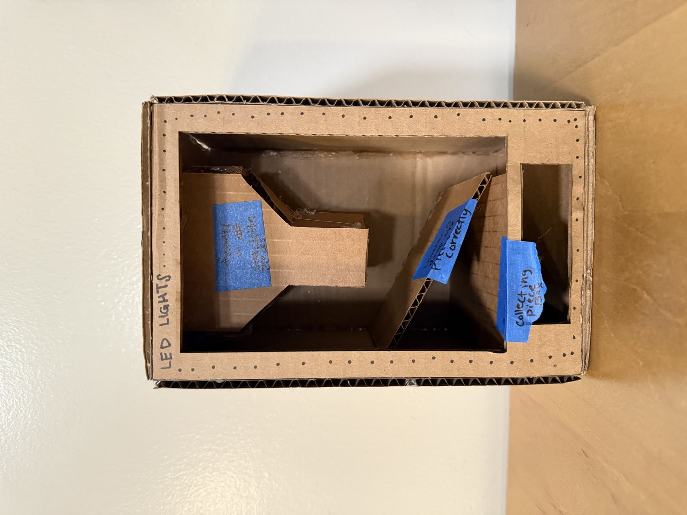
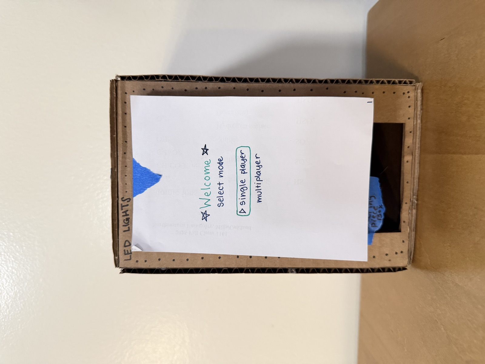
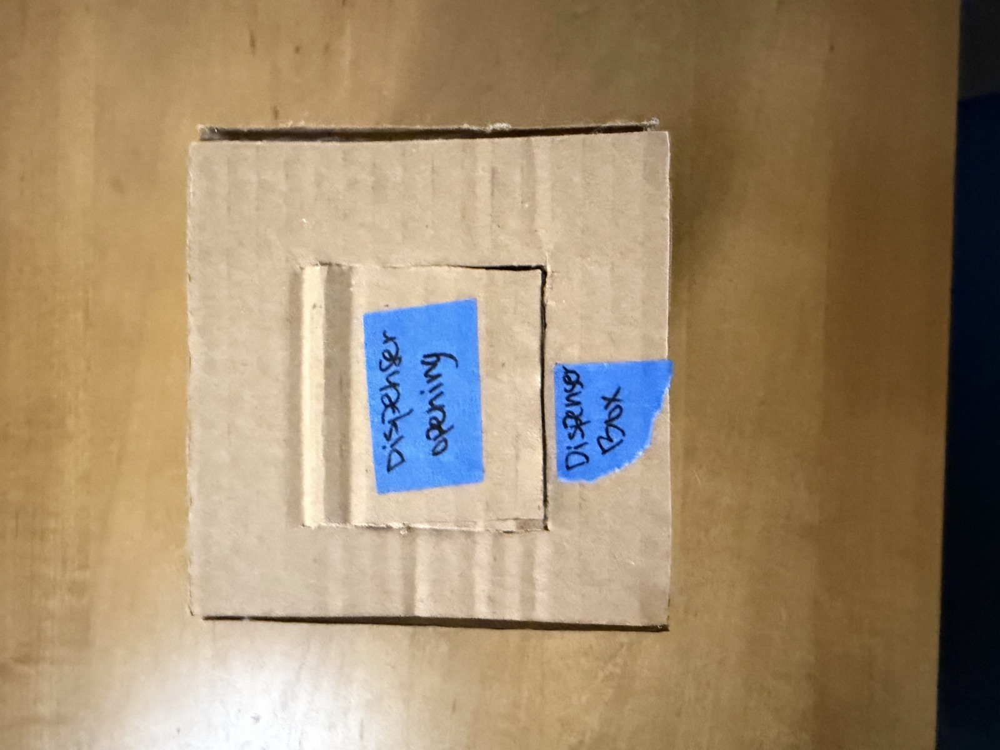
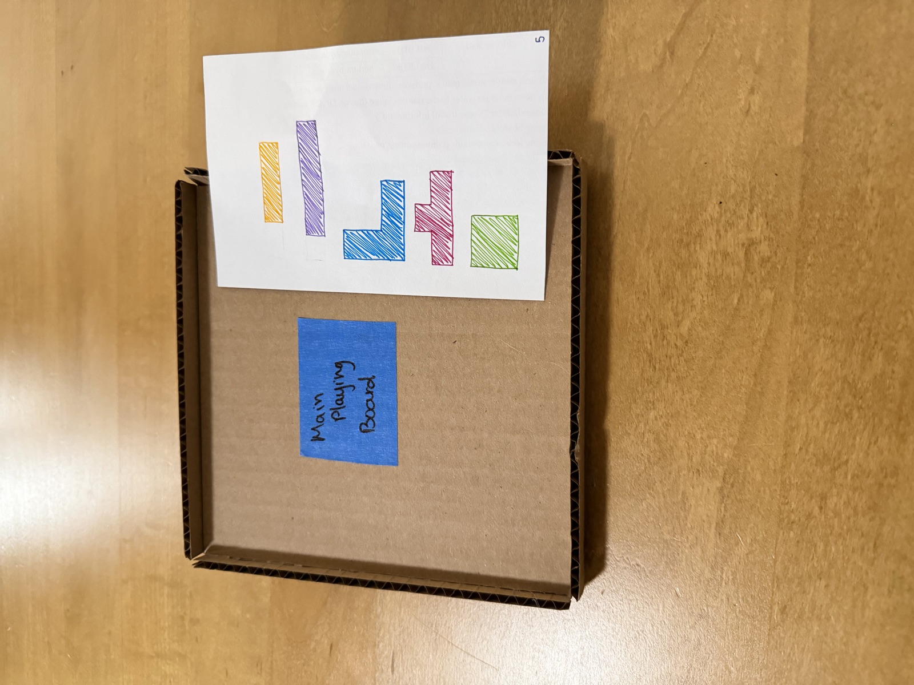
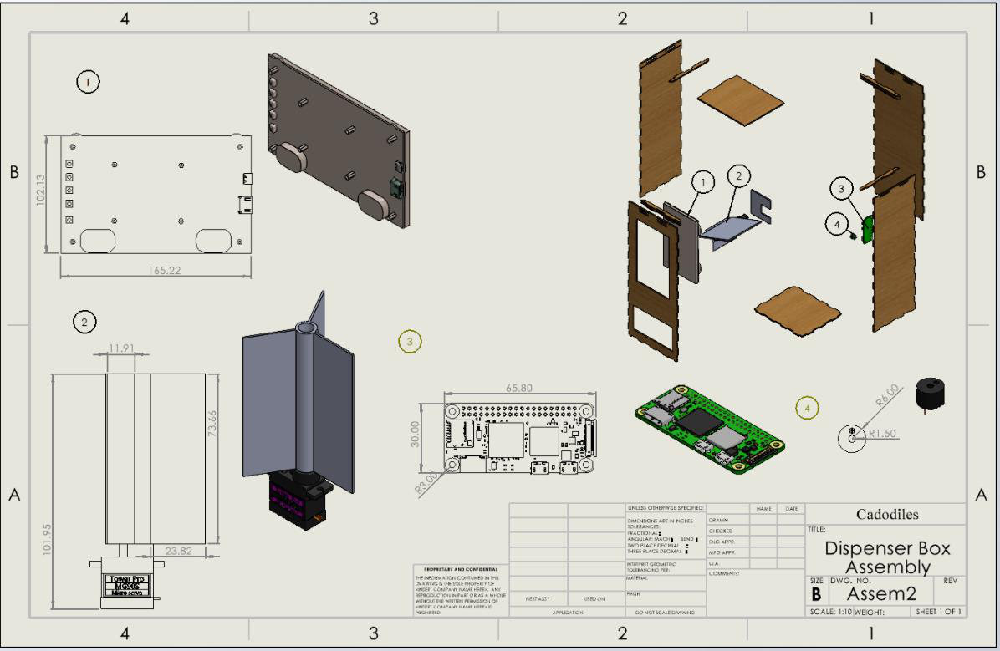
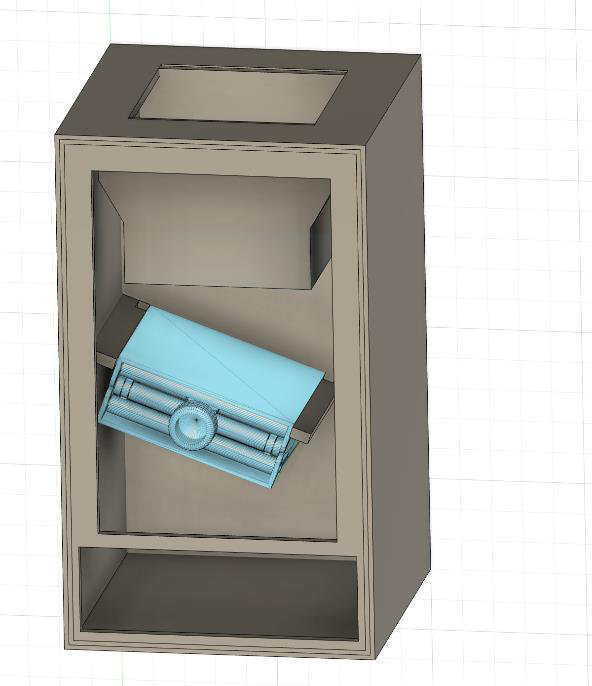
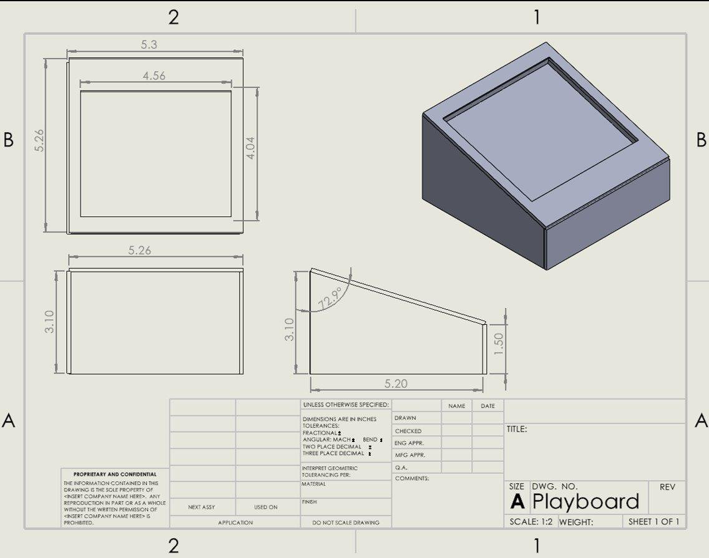
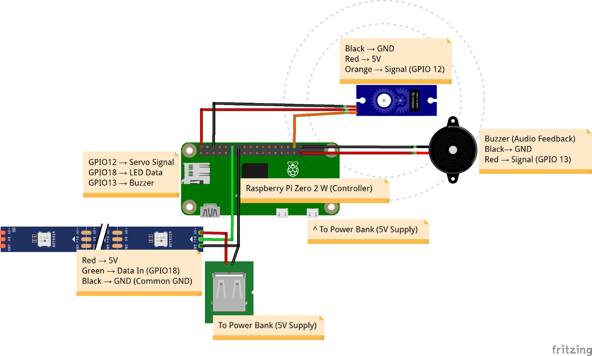
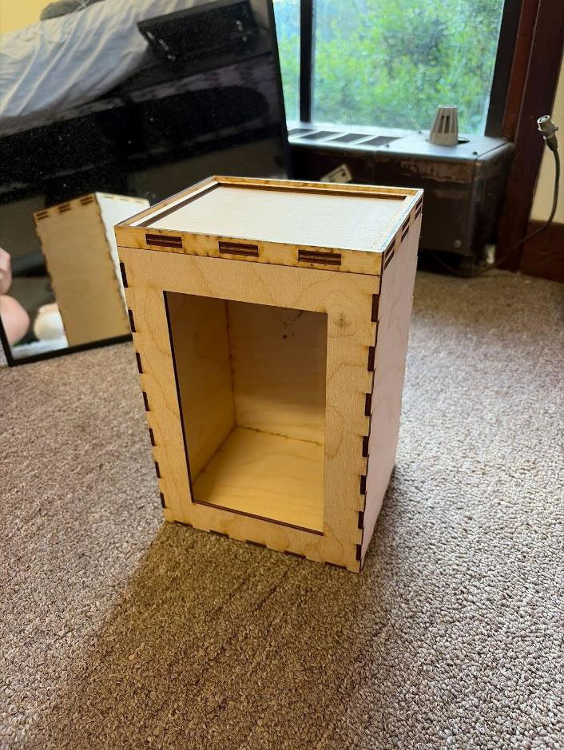
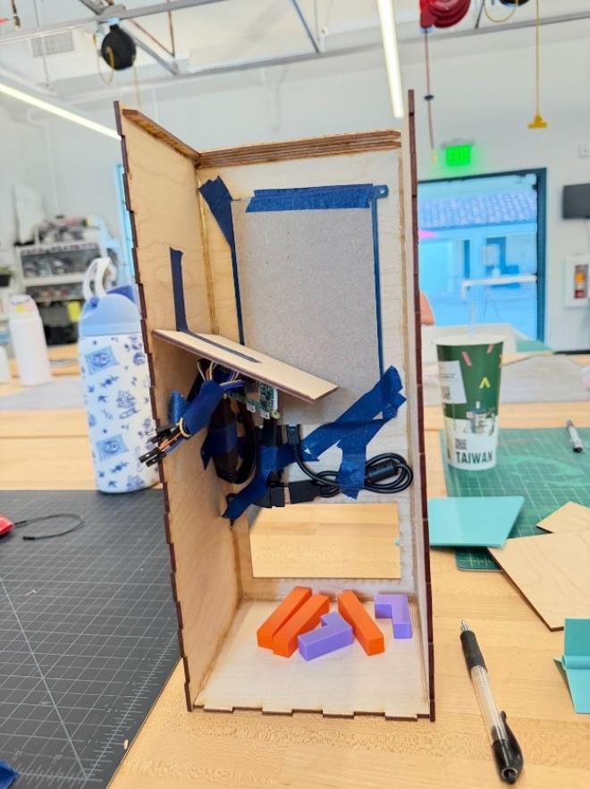
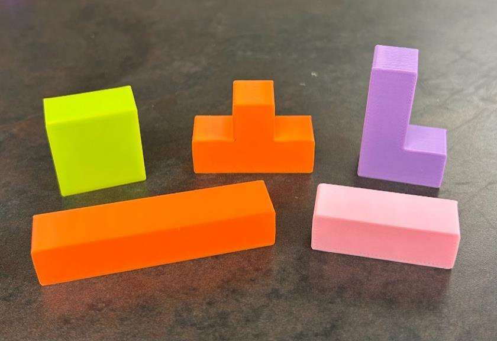
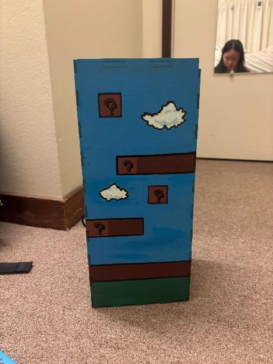
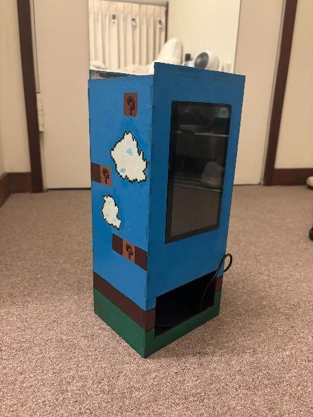
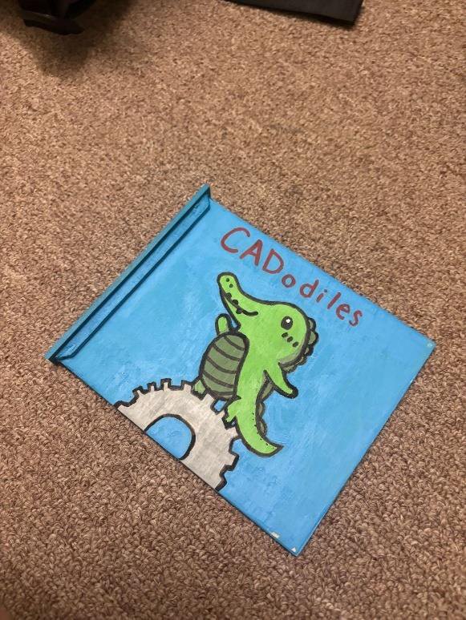
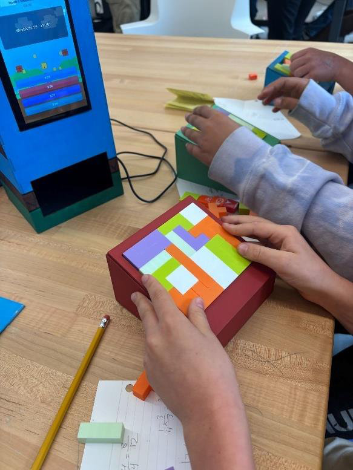
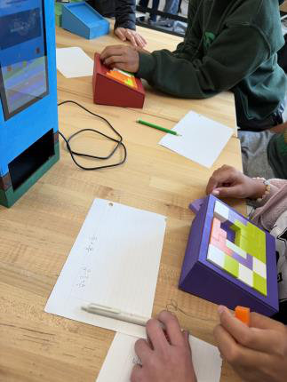